Srisurart POS · ภาค 01พนักงานหน้าร้าน
Part 01
พนักงานหน้าร้าน / เครื่อง POS Counter staff
งานประจำวันที่เคาน์เตอร์ — เข้าสู่ระบบ เปิดกะ ขาย พิมพ์ใบเสร็จ พักบิล ออกใบเสนอราคา คืนสินค้า บันทึกเงินเข้า-ออก และปิดกะ รวมถึงสิ่งที่เกิดขึ้นเมื่อเน็ตหลุด
บทบาทและสิทธิ์ · Role & permission
- ใครใช้
- คนที่ยืนเคาน์เตอร์ ใช้บัญชีร้าน (บัญชีเดียวของร้าน) บนเครื่องที่ผูกเป็น เครื่องขาย (POS)
- ต้องมี
- ชื่อผู้ใช้/รหัสผ่านของร้าน หรือ PIN ออฟไลน์ (เจ้าของร้านตั้งให้ — ภาค 02)
- ทำได้
- ขาย คืนสินค้า ยกเลิกบิล รับชำระเครดิตช่าง เปิด/ปิดกะ เงินเข้า-ออกลิ้นชัก พักบิล ใบเสนอราคา
- ทำไม่ได้
- บนเครื่อง Backoffice จะขาย/คืน/ใช้ลิ้นชักไม่ได้ (เซิร์ฟเวอร์ปฏิเสธ) · งานหลังร้าน เช่น แก้สินค้า ใบสั่งซื้อ ดูภาค 02
- Drift build
- ร้านที่ยังใช้แบบออฟไลน์ ไม่มีหน้าเข้าสู่ระบบ ไม่ต้องผูกเครื่อง และไม่มีสถานะซิงก์ — ข้ามหัวข้อ 1 และ 8 ได้ ที่เหลือใช้เหมือนกัน
ในภาคนี้ Contents
เมนูหลัก 12 หน้า Navigation
เมนูอยู่ด้านซ้าย (จอกว้าง) หรือในปุ่มเมนู ☰ (จอแคบ/มือถือ — ภาพ nav-menu-mobile ในหัวข้อ 3) เรียงตามนี้: ขายสินค้า สินค้า/สต็อก สั่งซื้อ ค้นหารุ่น ลูกค้า ช่าง คืนสินค้า ใบเสนอราคา รายงาน ตั้งค่า ลิ้นชัก รอเจ้าของ
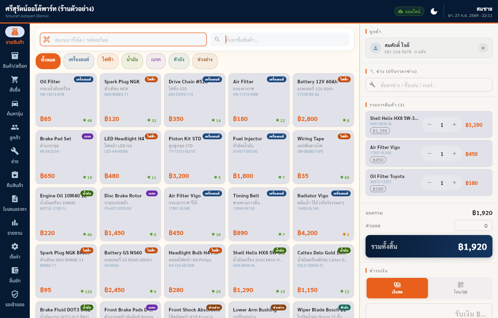
หน้าจอหลัก — เมนูซ้าย · สินค้ากลาง · ตะกร้าและการชำระเงินขวา · ป้ายสถานะ ออนไลน์ มุมขวาบน
Srisurart POS · ภาค 011 · เข้าสู่ระบบ
Section 1
เข้าสู่ระบบ Login (API build)
เข้าสู่ระบบทุกเช้า — ระบบตั้งใจให้ session หมดอายุตอน 04:00 ทุกวัน ตามเวลาของร้าน (ADR-0009) ถ้าหมดอายุระหว่างใช้งาน ระบบจะพากลับมาหน้านี้เองโดยไม่มีข้อความเตือน
session หมดอายุตอนไหน
- เข้าสู่ระบบก่อน 03:00 → ใช้ได้ถึง 04:00 ของเช้าวันนั้น · เข้าสู่ระบบหลัง 03:00 → ใช้ได้ถึง 04:00 ของวันถัดไป (ร้านที่เปิดตอนตีสามครึ่งจึงไม่ถูกเด้งออกในอีกครึ่งชั่วโมง)
- ระหว่างวันระบบต่ออายุให้เองเบื้องหลัง ไม่ต้องทำอะไร
- ร้านที่เปิดข้ามคืน: ตอน 04:00 จะกลับมาหน้าเข้าสู่ระบบ — ของในตะกร้าไม่หาย (ถ้าไม่ได้รีโหลดหน้าเว็บ) เข้าสู่ระบบใหม่แล้วขายต่อ ถ้าตอนนั้นเน็ตหลุดให้ใช้ PIN ออฟไลน์ (ด้านล่าง)
- ส่งต่อเครื่องให้คนถัดไป: กด ออกจากระบบ เอง (ตั้งค่า → 🔐 บัญชี / ผูกเครื่อง) → ระบบล้างตะกร้าและใบเสนอราคาที่ค้างในตะกร้า และคนถัดไปเข้าสู่ระบบแล้วไปหน้า ขายสินค้า เสมอ · รายการที่รอส่งขึ้นเซิร์ฟเวอร์ (หัวข้อ 8) ไม่หาย · ต่างจาก session หมดอายุ ที่ตะกร้ายังอยู่และพากลับหน้าเดิม
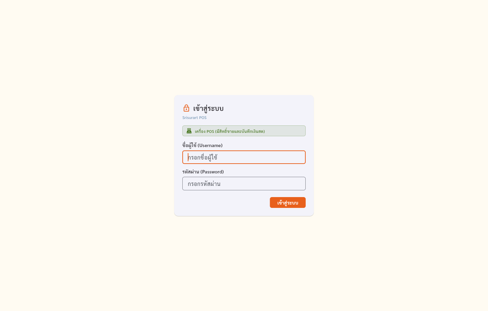
หน้าเข้าสู่ระบบบนเครื่อง POS — ป้าย เครื่อง POS (มีสิทธิ์ขายและบันทึกเงินสด)
ออนไลน์ — ใช้รหัสผ่าน Online
- ดูป้ายสถานะเครื่องเหนือฟอร์มต้องเป็น เครื่อง POS (มีสิทธิ์ขายและบันทึกเงินสด) ถ้าเห็น โหมด Backoffice (ยังไม่ได้ผูกเครื่อง POS) เครื่องนี้ยังขายไม่ได้ — แจ้งเจ้าของร้านให้ผูกเครื่อง (ภาค 02) · ถ้าเห็น ผูกเครื่องกับร้านแล้ว รอเข้าสู่ระบบเพื่อยืนยันสิทธิ์การใช้งาน แปลว่าเพิ่งผูกเครื่อง — เข้าสู่ระบบต่อได้เลย
- กรอก ชื่อผู้ใช้ (Username) และ รหัสผ่าน (Password)
- กด เข้าสู่ระบบหน้า ขายสินค้า และแถบเมนูเบราว์เซอร์อาจถามว่าจะบันทึกรหัสผ่านไหม — บันทึกได้บนเครื่องที่คนเดียวใช้ · เครื่องใช้ร่วมกันให้กด "ไม่" (ระบบไม่เสนอให้บันทึกรหัสผ่านชั่วคราวหรือรหัสที่ถูกปฏิเสธ)
ถ้าขึ้นหน้า "ตั้งรหัสผ่านใหม่"แปลว่ากำลังใช้รหัสผ่านชั่วคราว — เป็นงานของเจ้าของร้าน ดูภาค 02 หัวข้อ 1
ออฟไลน์ — ใช้ PIN Offline PIN
เมื่อเน็ตหลุด หน้าเข้าสู่ระบบบนเครื่อง POS ที่ตั้ง PIN ไว้แล้วจะขึ้น โหมดออฟไลน์: เข้าสู่ระบบหน้าร้านด้วย PIN 4-6 หลัก เพื่อขายของและบันทึกรายการ
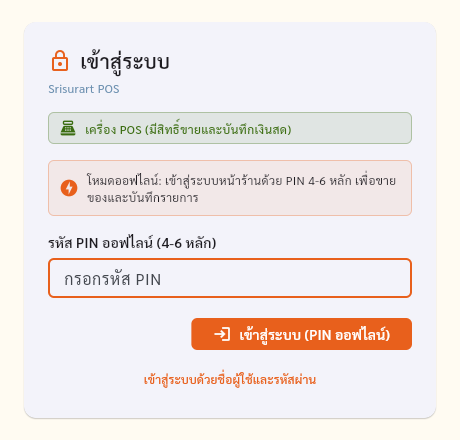
ฟอร์มเข้าสู่ระบบด้วย PIN ออฟไลน์ — ขึ้นเองเมื่อเครื่อง POS ติดต่อเซิร์ฟเวอร์ไม่ได้ (ถ่ายโดยปิดทางเข้า API ของสแตก dev)
- รอให้ระบบรู้ว่าเน็ตหลุดระบบตรวจการเชื่อมต่อทุก 5 วินาที — ฟอร์ม PIN ขึ้นเมื่อตรวจไม่ผ่านติดกัน 3 ครั้ง (ราว 15 วินาที) หรือทันทีที่เซิร์ฟเวอร์ตอบช้าเกิน 5 วินาที ถ้ายังเห็นช่องชื่อผู้ใช้/รหัสผ่าน ให้รอสักครู่
- กรอก รหัส PIN ออฟไลน์ (4-6 หลัก)PIN เดียวทั้งร้าน ผูกกับเครื่องนี้เท่านั้น
- กด เข้าสู่ระบบ (PIN ออฟไลน์)หน้าขาย พร้อมแถบสีเหลือง "ออฟไลน์ (ขายสำรอง)"
- เมื่อเน็ตกลับรายการที่ขายไว้ส่งขึ้นเซิร์ฟเวอร์เอง (หัวข้อ 8) — ลิงก์ เข้าสู่ระบบด้วยชื่อผู้ใช้และรหัสผ่าน ใต้ปุ่มใช้สลับกลับไปฟอร์มรหัสผ่าน
| ถ้าเห็นข้อความนี้ | หมายความว่า / ทำอย่างไร |
|---|
| เครื่องนี้ยังไม่ได้ตั้งค่า PIN ออฟไลน์ กรุณาเชื่อมต่ออินเทอร์เน็ตเพื่อเข้าสู่ระบบ | ไม่ใช่เครื่อง POS หรือยังไม่ตั้ง PIN — รอเน็ตกลับ |
| ไม่สามารถใช้ PIN ออฟไลน์ได้เนื่องจากเกินกำหนด 3 วัน กรุณาเชื่อมต่ออินเทอร์เน็ตเพื่อเข้าสู่ระบบใหม่ | PIN ใช้ได้ 3 วันนับจากเข้าสู่ระบบออนไลน์ครั้งล่าสุด |
| เข้าสู่ระบบไม่สำเร็จ | เข้าสู่ระบบไม่ได้ (เช่น เครื่องอ่านข้อมูลที่เก็บไว้ไม่ได้) ระบบจะแจ้งข้อความนี้เสมอ ไม่หมุนค้าง — ลองกดใหม่ ถ้ายังไม่ได้ให้แจ้งเจ้าของร้าน |
| รหัส PIN ถูกล็อกเนื่องจากใส่ผิดครบ 5 ครั้ง กรุณาเชื่อมต่ออินเทอร์เน็ตเพื่อเข้าสู่ระบบด้วยรหัสผ่านหลัก | ต้องเข้าด้วยรหัสผ่านตอนออนไลน์ แล้วให้เจ้าของร้านตั้ง PIN ใหม่ |
Srisurart POS · ภาค 012 · เปิดกะ
Section 2
เปิดกะ — ลิ้นชักเงินสด Open shift
ต้องเปิดกะก่อนขาย — ใน API build ถ้ายังไม่เปิดกะ กดชำระเงินจะขึ้น กรุณาเปิดกะก่อนขาย และรับชำระเครดิตช่างจะขึ้น กรุณาเปิดกะก่อนรับชำระ
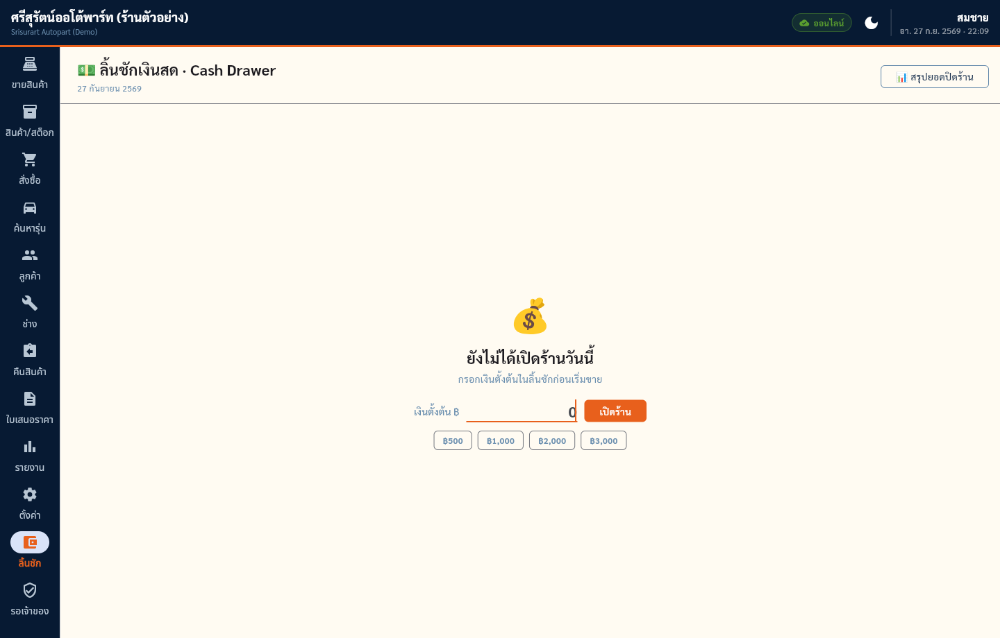
หน้า ลิ้นชัก — ยังไม่ได้เปิดร้านวันนี้
- นับเงินทอนที่ใส่ลิ้นชัก
- กดเมนู ลิ้นชักยังไม่ได้เปิดร้านวันนี้ / กรอกเงินตั้งต้นในลิ้นชักก่อนเริ่มขาย
- กรอก เงินตั้งต้น ฿หรือกดปุ่มลัด ฿500 ฿1,000 ฿2,000 ฿3,000 (ต้องมากกว่า 0 ไม่เช่นนั้นขึ้น กรุณากรอกเงินตั้งต้นให้ถูกต้อง)
- กด เปิดร้าน2 แท็บ 💵 รายการเงิน / 🔒 ปิดลิ้นชัก และประวัติ เปิดร้าน {hh:mm} · ตั้งต้น {baht}
เปิดกะตอนเน็ตหลุดใน API build การเปิดกะและการบันทึกเงินเข้า-ออกทำได้ตอนออฟไลน์ — ระบบเก็บไว้ในเครื่องแล้วส่งขึ้นเซิร์ฟเวอร์เองเมื่อเน็ตกลับ
กะที่ไม่ได้ปิดถ้าลืมปิดกะ เมื่อเปิดกะใหม่ ระบบจะเก็บกะเก่าเข้าประวัติเองแบบ "ไม่ได้นับเงิน" และขึ้นให้เจ้าของร้านตรวจในหน้า รอเจ้าของ เป็นรายการ กะไม่ได้นับเงินสด — นับเงินและปิดกะทุกครั้งดีที่สุด
Srisurart POS · ภาค 013 · ขายสินค้า
Section 3
ขายสินค้า Checkout
หน้าแรกของระบบ ซ้ายคือรายการสินค้า ขวาคือตะกร้าและการชำระเงิน (บนมือถือแยกเป็น 2 แท็บ สินค้า / ตะกร้า)
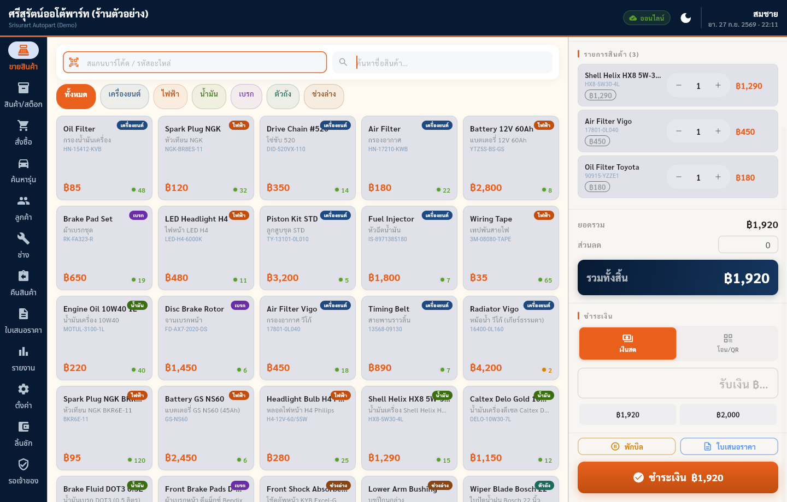
ตะกร้า ยอดรวม วิธีชำระ ปุ่มลัดรับเงิน และปุ่ม ชำระเงิน
- เพิ่มสินค้ายิงบาร์โค้ด/พิมพ์รหัสในช่อง สแกนบาร์โค้ด / รหัสอะไหล่ แล้วกด Enter หรือค้นชื่อในช่อง ค้นหาชื่อสินค้า… แล้วแตะการ์ดสินค้า (กรองหมวดด้วยชิป ทั้งหมด ฯลฯ) สินค้าลงตะกร้า — ถ้ารหัสไม่มีจะขึ้น ไม่พบรหัส: {val}
- ปรับจำนวนขายเกินสต็อกไม่ได้: สต็อก "{name}" เหลือเพียง {stock} ชิ้น · การ์ดที่ขึ้น สินค้าหมด กดไม่ได้
- เลือกลูกค้า (ถ้ามี)ช่อง ลูกค้า ค้นด้วยชื่อหรือเบอร์ — ลูกค้าได้แต้ม 1 แต้มต่อทุก ฿10 (ปัดลง)
- เลือกช่าง (ถ้าเป็นงานช่าง)ช่อง 🔧 ช่าง (ปรับราคาช่าง) — ดูหัวข้อ 4
- ใส่ส่วนลด (ถ้ามี)ช่อง ส่วนลด — กดปุ่ม ฿ / % ข้างช่องเพื่อเลือกกรอกเป็นบาทหรือเปอร์เซ็นต์ (0–100) โหมด % ระบบคิดเป็นบาทให้และแสดงยอดใต้ช่อง ถ้าแก้ตะกร้ายอดส่วนลดจะคิดใหม่เอง (พักบิล/ใบเสนอราคาเก็บเป็นบาท) — เกินยอดรวมไม่ได้ (ส่วนลด {baht} เกินยอดรวม {baht})
- เลือกวิธีชำระเงินสด · โอน/QR · เครดิตช่าง (ขึ้นเฉพาะเมื่อเลือกช่าง)
- เงินสด: กรอกเงินที่รับช่อง รับเงิน ฿… หรือปุ่มลัด แถว เงินทอน — ถ้าเงินไม่พอกดขายจะขึ้น รับเงินไม่ครบ
- กด ชำระเงิน {baht}ระหว่างบันทึกปุ่มเป็น กำลังบันทึก…ใบเสร็จ (หัวข้อ 4)
อ่านการ์ดสินค้า · ดูรูปสินค้า Product card & picture
- รูปอยู่ด้านบนของการ์ด — สินค้าที่เจ้าของร้านยังไม่ใส่รูปแสดงเป็นไอคอนบนพื้นสีอ่อนแทน (ไม่ใช่ข้อผิดพลาด) · รูปโหลดไม่ขึ้น (เน็ตช้า/หลุด) ก็ขึ้นไอคอนเช่นกัน
- ป้ายหมวด อยู่มุมซ้ายบนของรูป · ⭐ สินค้าโปรด อยู่มุมขวาบน กดแล้วสลับเพิ่ม/เอาออกจากสินค้าโปรดเหมือนเดิม (ไม่เพิ่มลงตะกร้า)
- ใต้รูป เรียงจากบนลงล่าง: รหัสสินค้า (ตัวเล็กสีจาง) · สถานะสต็อก มีสินค้า / สต็อกต่ำ / หมด · ชื่อสินค้า (ยาวเกิน 2 บรรทัดตัดด้วย …) · คงเหลือ {n} · ราคาตัวใหญ่ล่างสุด
- ดูรูปขนาดใหญ่: สินค้าที่มีรูปจะมีปุ่มแว่นขยาย (ชี้ค้างจะขึ้น ดูรูป) ที่มุมขวาล่างของรูป → เปิดหน้าต่างรูปใหญ่ มีชื่อและรหัสสินค้า ใช้สองนิ้วถ่าง/เลื่อนเมาส์เพื่อซูมได้ → กด ปิด · ปุ่มนี้ไม่เพิ่มสินค้าลงตะกร้า
- แตะส่วนอื่นของการ์ด = เพิ่มลงตะกร้าเหมือนเดิม · การ์ดสินค้าหมด (ม่านทับ สินค้าหมด) ยังกดเพิ่มไม่ได้ แต่ ⭐ ยังกดได้
(ภาพหน้าจอ: checkout-product-card — รอเพิ่ม)
การ์ดสินค้า — รูปด้านบน ป้ายหมวดมุมซ้ายบน ⭐ มุมขวาบน ปุ่มดูรูปมุมขวาล่างของรูป
รูปมาจากไหนเจ้าของร้านเป็นคนใส่/เปลี่ยน/ลบรูปที่หน้า สินค้า/สต็อก (ภาค 02 หัวข้อ 4) — พนักงานหน้าร้านดูรูปได้อย่างเดียว · เครื่องที่ยังไม่ซิงก์สินค้าล่าสุดอาจยังเห็นรูปเก่าหรือยังไม่มีรูป · รูปโหลดผ่านอินเทอร์เน็ต — โหลดไม่ได้การ์ดก็แสดงไอคอนแทนและขายได้ตามปกติ
ล้างตะกร้าทั้งหมดไอคอนถังขยะข้างหัวข้อ รายการสินค้า ({n}) (ชี้ค้างจะขึ้น ล้างรายการ) → ล้างรายการสินค้าทั้งหมด? จะลบสินค้าทั้ง {n} รายการออกจากตะกร้า ย้อนกลับไม่ได้ → กด ล้างรายการ (ปุ่ม ยกเลิก ถูกเลือกไว้ก่อน กด Enter เฉยๆ จึงไม่ล้าง) · กดไม่ได้ระหว่างกำลังบันทึกบิลหรือพักบิล — บิลที่ขายไม่สำเร็จจึงไม่หายจากตะกร้า
อย่ากดซ้ำเมื่อเน็ตช้าระบบใช้เลขบิลและ Idempotency-Key เดิมทุกครั้งที่ลองใหม่กับตะกร้าเดิม จึงไม่ขายซ้ำ — แต่ถ้าขึ้น ขายไม่สำเร็จ: {msg} ให้อ่านข้อความก่อนลองใหม่ ถ้าเป็นเรื่องสต็อกจะขึ้น สต็อกไม่พอ: พร้อมรายการที่ขาด
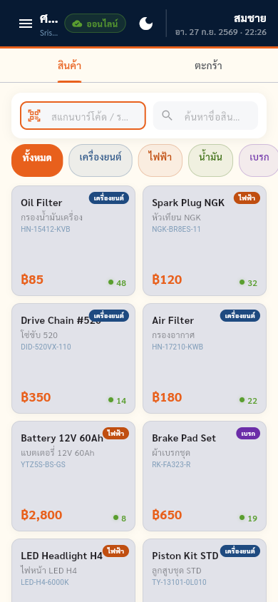
มือถือ — แท็บ สินค้า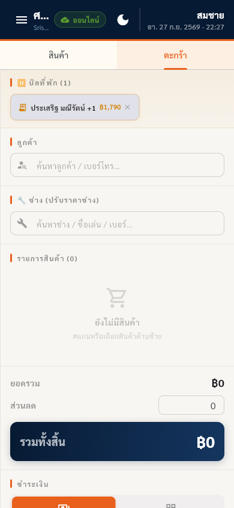
มือถือ — แท็บ ตะกร้า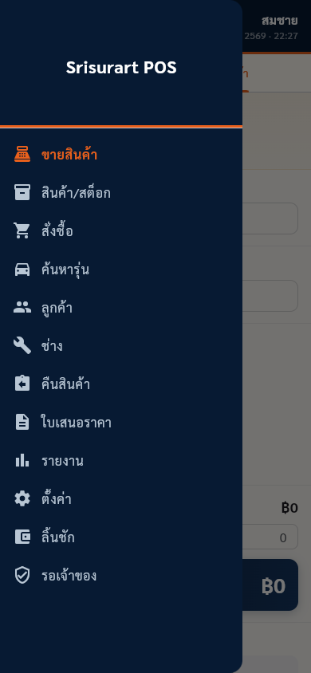
มือถือ — เมนู ☰ เรียง 12 หน้า
Srisurart POS · ภาค 013.1 · ค้นหาตามรุ่นรถ
Section 3.1
ค้นหาอะไหล่ตามรุ่นรถ Search by vehicle
ใช้เมื่อลูกค้าบอกรุ่นรถแต่ไม่รู้รหัสอะไหล่ — ระบบค้นจากช่อง "ใช้กับรถรุ่น" ของสินค้าทุกตัว แล้วให้คัดลอกรหัสไปวางในช่องสแกนของหน้าขาย
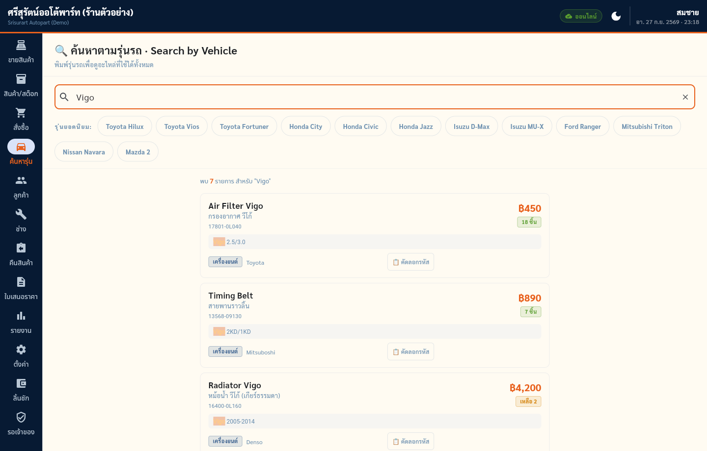
ค้นหาตามรุ่นรถ — ค้น "Vigo" พบ 7 รายการ · ป้ายเขียว/ส้มมุมขวาคือจำนวนคงเหลือ
- เมนู ค้นหารุ่นหรือจากหน้า สินค้า/สต็อก กดปุ่ม ค้นหาตามรุ่นรถ มุมขวาบน (เปิดเป็นหน้าต่าง)🔍 ค้นหาตามรุ่นรถ · Search by Vehicle และ เลือกรุ่นรถหรือพิมพ์ชื่อรุ่น
- พิมพ์รุ่นในช่องค้นหาเช่น เช่น Toyota Hilux, Honda Civic, Isuzu D-Max... หรือแตะชิปใน รุ่นยอดนิยม: (แตะซ้ำเพื่อยกเลิก) — ค้นแบบ "มีคำนี้อยู่" ไม่สนตัวพิมพ์เล็ก-ใหญ่พบ {n} รายการ สำหรับ "{query}"
- อ่านการ์ดผลลัพธ์ชื่อ/ชื่อไทย รหัส ราคา และป้ายสต็อก หมด · เหลือ {n} (ต่ำกว่าขั้นต่ำ) · {n} ชิ้น
- กด 📋 คัดลอกรหัสการ์ดกดเปิดไม่ได้ — มีแค่ปุ่มคัดลอก
- กลับไปเมนู ขายสินค้า → วางรหัสในช่อง สแกนบาร์โค้ด / รหัสอะไหล่ → Enterสินค้าลงตะกร้า (หัวข้อ 3)
| ถ้าเห็น | หมายความว่า / ทำอย่างไร |
|---|
| ไม่พบอะไหล่สำหรับ "{query}" · ลองค้นหาด้วยชื่ออื่น หรือตรวจสอบฟิลด์ Compat ในสต็อก | ลองคำสั้นลง (เช่น "Vigo" แทน "Toyota Vigo 2010") · ถ้ารู้ว่ามีของแต่ไม่ขึ้น ให้เจ้าของร้านเติมช่อง "ใช้กับรถรุ่น" ของสินค้านั้น (ภาค 02 หัวข้อ 4) |
ผลค้นหาดีแค่ไหนขึ้นกับการกรอกช่อง "ใช้กับรถรุ่น" ตอนเพิ่มสินค้า
Srisurart POS · ภาค 014 · ช่าง · ใบเสร็จ
Section 4
ราคาช่าง · เครดิตช่าง · ใบเสร็จ Mechanic price, credit & receipt
ปรับราคาช่างรายรายการ Per-line price
- เลือกช่างก่อนคำใบ้ คลิกราคาเพื่อปรับ ในตะกร้า
- แตะราคาของรายการ แล้วพิมพ์ราคาใหม่ราคาใหม่มี ✎ และราคาปกติขีดฆ่า ปกติ {originalBaht} พร้อมปุ่มคืนราคาเดิม
ต่ำกว่าทุนไม่ได้: ราคา ฿{p} ต่ำกว่าทุน ฿{cost} — ห้ามขายต่ำกว่าทุน · ส่วนต่างแสดงเป็น ↑ ช่างได้ส่วนต่าง หรือ ↓ เครดิตช่าง (ลดราคา)
ขายเครดิตช่าง Mechanic credit
- เลือกช่าง → กด เครดิตช่างกล่องยอดค้างเดิม / +บิลนี้ / ยอดค้างหลังบิลนี้ / วงเงิน · ถ้าเกินจะขึ้น ⚠ เกินวงเงินเครดิต! และปุ่มมี ⚠
- กด ชำระเงิน {baht}ถ้าเกินวงเงินจะถามยืนยัน เกินวงเงินเครดิต! ยอดค้างใหม่ {baht} > วงเงิน {baht}
ยืนยันขายเครดิต? กดยืนยันเฉพาะเมื่อเจ้าของร้านอนุญาต
- ถ้าเซิร์ฟเวอร์ยังเห็นว่าเกินวงเงินระบบจะถามยืนยันอีกครั้งด้วยตัวเลขจากเซิร์ฟเวอร์ — ทุกครั้งที่ยืนยันขายเกินวงเงิน เซิร์ฟเวอร์บันทึกลง audit log และถ้าเป็นบิลที่ขายตอนออฟไลน์ จะขึ้นให้เจ้าของร้านตรวจในหน้า รอเจ้าของ เป็น วงเงินเกิน (อนุมัติพิเศษ)
ถ้ายังไม่เลือกช่างแต่เลือกเครดิต จะขึ้น ต้องเลือกช่างก่อนใช้เครดิต
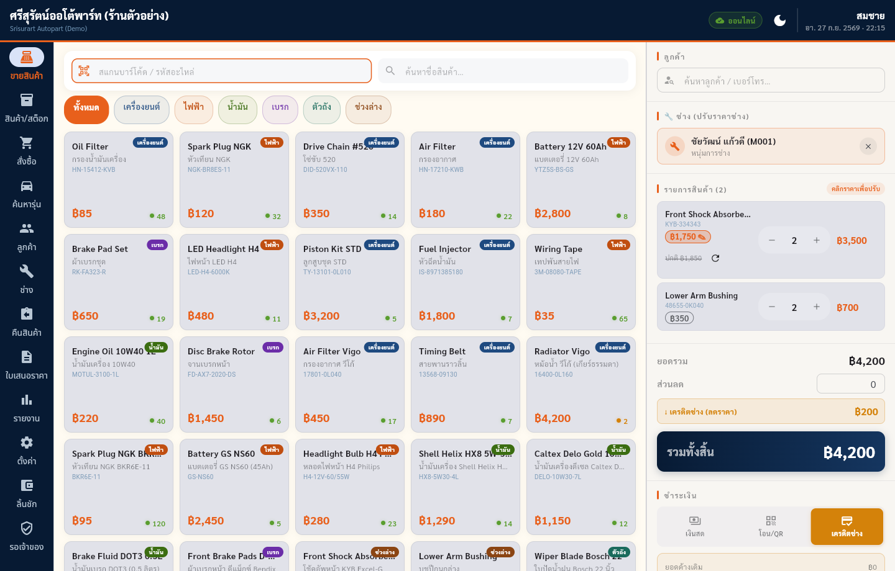
เลือกช่าง — ราคาช่าง ✎ ราคาปกติขีดฆ่า แถบ ↓ เครดิตช่าง (ลดราคา) และปุ่ม เครดิตช่าง
ใบเสร็จ Receipt
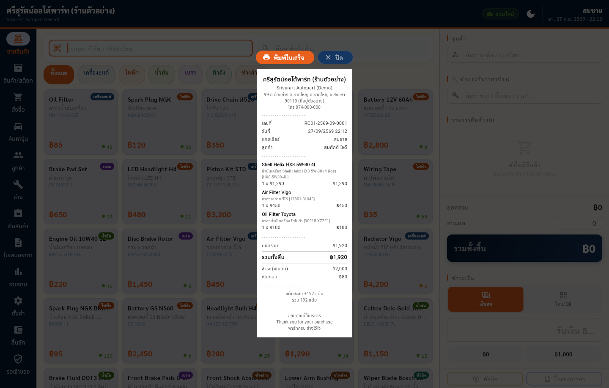
ใบเสร็จเงินสด — เงินทอน และแต้มสะสมของลูกค้า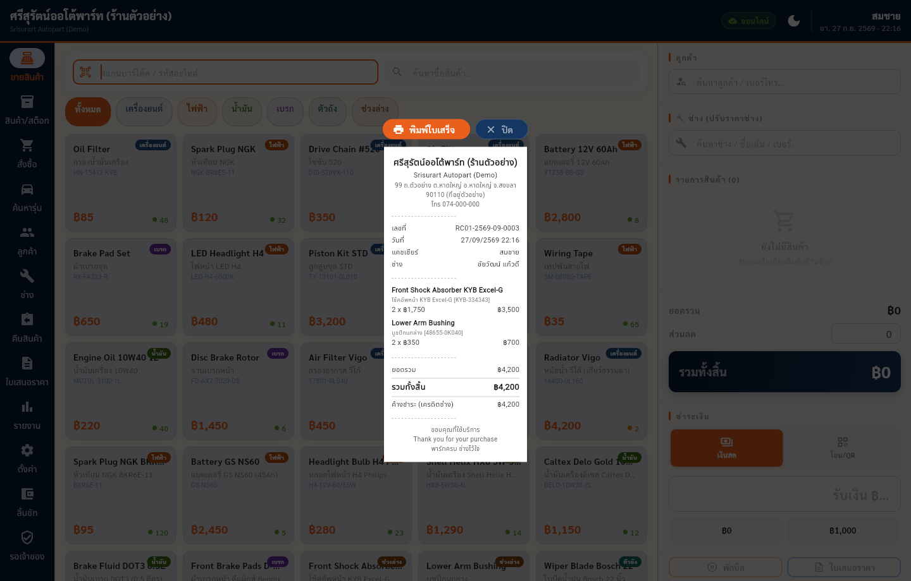
ใบเสร็จเครดิตช่าง — ค้างชำระ (เครดิตช่าง)
- มี เลขที่ / วันที่ / แคชเชียร์ / ลูกค้าและช่าง (ถ้ามี) — เลขบิลขึ้นต้น
RC ใช้ค้นตอนคืนสินค้า
- บิลเครดิตช่างแสดง ค้างชำระ (เครดิตช่าง) แทนเงินทอน · ถ้ามีลูกค้าแสดง แต้มสะสม +{n} แต้ม
- กด พิมพ์ใบเสร็จ → หน้าต่างพิมพ์ของเครื่อง หรือ ปิด เพื่อเริ่มบิลถัดไป
พิมพ์ใบเสร็จซ้ำไม่ได้หน้าต่างใบเสร็จขึ้นครั้งเดียวหลังกดชำระเงิน — ไม่มีเมนูพิมพ์ใบเสร็จย้อนหลัง ถ้าลูกค้าต้องการใบเสร็จ ให้กด พิมพ์ใบเสร็จ ก่อนกด ปิด (เลขบิลยังดูได้ในหน้า คืนสินค้า และ รายงาน → รายการล่าสุด)
Srisurart POS · ภาค 015 · พักบิล · ใบเสนอราคา
Section 5
พักบิล · ใบเสนอราคา Park & quotes
พักบิล Park a bill
- กด พักบิล ใต้ตะกร้า⏸ พักบิลแล้ว — กดที่แถบด้านบนเพื่อเรียกคืน และแถบ ⏸ บิลที่พัก ({n})
- ขายคนถัดไปตามปกติ
- แตะบิลในแถบบิลที่พักเพื่อเรียกคืนถ้าตะกร้ามีของอยู่ ระบบจะพักให้ก่อน: ⏸ พักบิลปัจจุบันถูกพักอัตโนมัติก่อนเรียกคืนบิลนี้ · ถ้าสต็อกเปลี่ยนระหว่างพัก จะขึ้น ข้อมูลเปลี่ยนระหว่างพักบิล: พร้อมรายการ
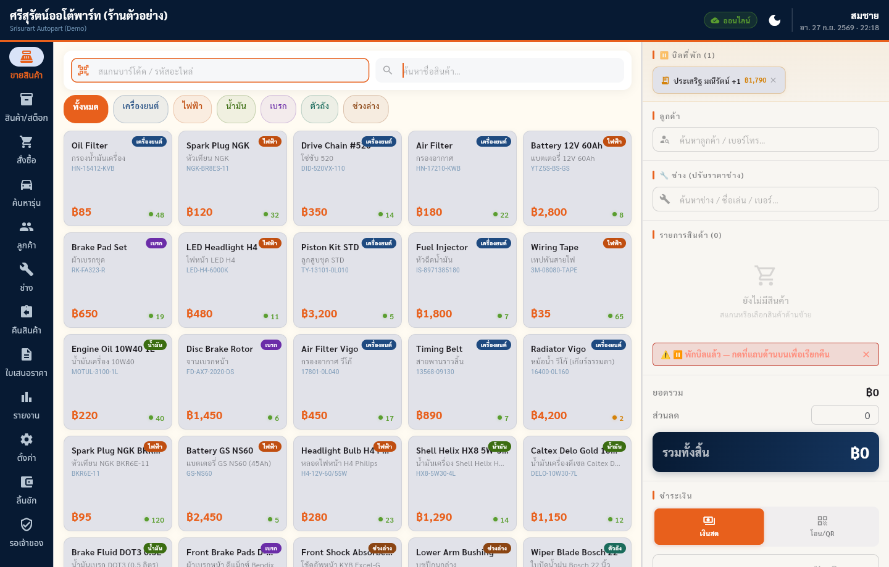
แถบ ⏸ บิลที่พัก (1) ด้านบนตะกร้า และข้อความ พักบิลแล้ว
รู้ไว้บิลที่พัก ไม่ตัดสต็อก และ อยู่ในเครื่องนี้เท่านั้น — ไม่ส่งขึ้นเซิร์ฟเวอร์ เปลี่ยนเครื่องหรือล้างเบราว์เซอร์แล้วหาย
ออกใบเสนอราคา Save a quote
- ใส่สินค้าลงตะกร้าเหมือนขาย
- กด ใบเสนอราคา ใต้ตะกร้าบันทึกใบเสนอราคาแล้ว
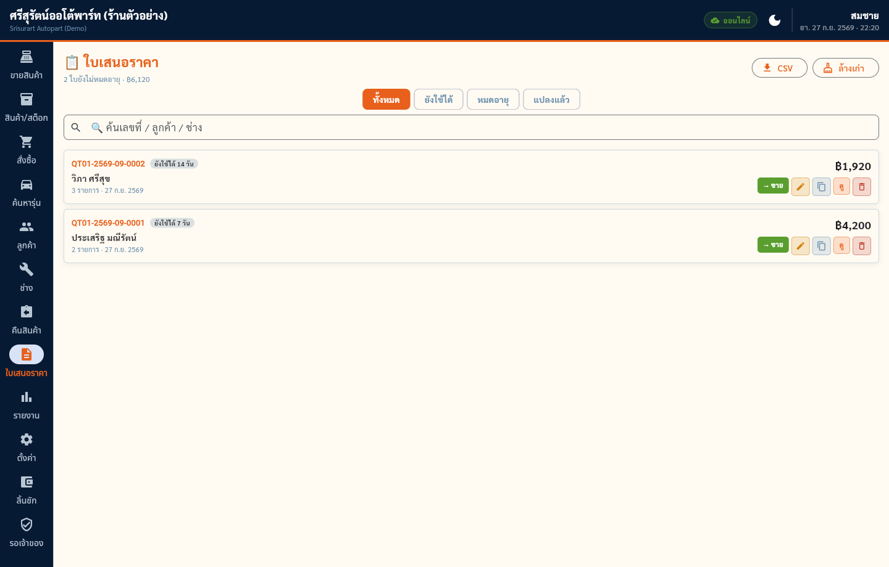
หน้า ใบเสนอราคา — กรอง ทั้งหมด / ยังใช้ได้ / หมดอายุ / แปลงแล้ว
พิมพ์ใบเสนอราคา A4 ให้ลูกค้า A4 quote
- เมนู ใบเสนอราคา → ค้นในช่อง 🔍 ค้นเลขที่ / ลูกค้า / ช่างหรือกรองด้วย ยังใช้ได้ — ป้ายบนแถวบอก ยังใช้ได้ {validDays} วัน (วันที่เหลือ) · หมดอายุ · ✓ แปลงแล้ว
- กด ดู ที่แถวใบ A4 หัว ใบเสนอราคา / QUOTATION ชื่อลูกค้า (— ลูกค้าทั่วไป — ถ้าไม่ได้เลือก) วันที่ ใช้ได้ถึง รายการ ยอดรวม เงื่อนไข และช่องลายมือชื่อ
- กดไอคอนเครื่องพิมพ์ในแถบสีส้มด้านล่าง→ หน้าต่างพิมพ์ของเครื่อง (เลือก A4 หรือบันทึกเป็น PDF) · ไอคอนแชร์ข้าง ๆ ใช้ส่งไฟล์
- ปิดด้วย ✕ มุมซ้ายบนหรือกด ✓ แปลงเป็นการขาย มุมขวาบนถ้าลูกค้าตกลงซื้อเลย (มีเฉพาะใบที่ยังไม่หมดอายุและยังไม่แปลง)
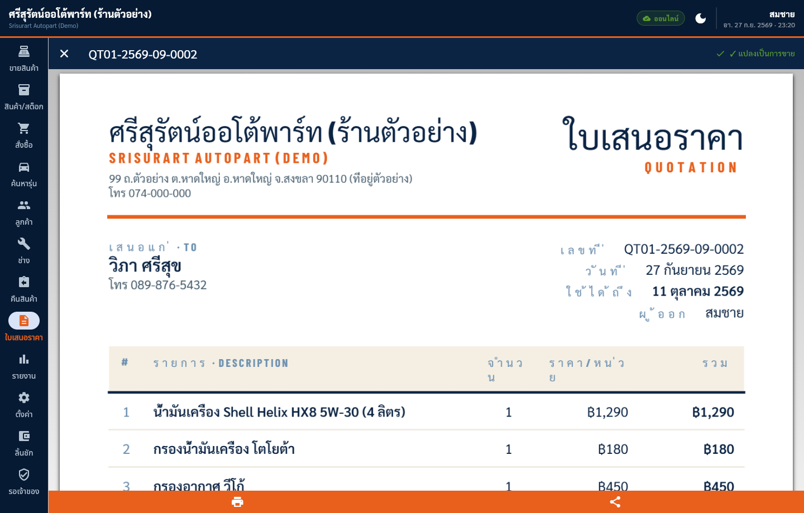
ใบ A4 — ส่วนหัวและรายการ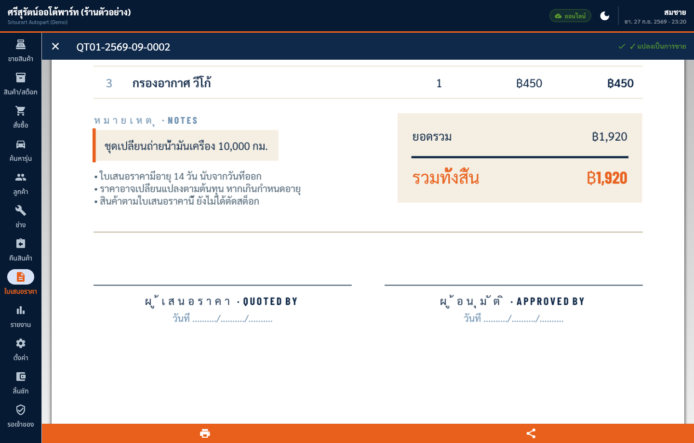
ใบ A4 — เงื่อนไข ยอดรวม ช่องลายมือชื่อจัดการใบเสนอราคา Manage
- → ขาย แปลงเป็นการขาย: แปลง {quoteNo} เป็นการขาย? ระบบจะใส่รายการนี้กลับเข้าตะกร้า แล้วชำระเงินที่หน้าขายตามปกติ — ถ้าสต็อกเปลี่ยนไปตั้งแต่ออกใบ ระบบจะขึ้น สต็อกเปลี่ยนแปลงตั้งแต่ออกใบเสนอ: พร้อมรายการ
- ✎ แก้ไข = ลบใบเดิมแล้วใส่ตะกร้าให้บันทึกใหม่ (ได้เลขใบใหม่) · ⎘ ทำซ้ำ = ออกใบใหม่ต่ออายุ · 🗑 ลบ
- CSV ดาวน์โหลดรายการใบเสนอราคาเป็นไฟล์ · ล้างเก่า ลบใบที่หมดอายุ/แปลงแล้วเกินจำนวนวันที่กรอก (ค่าเริ่มต้น 90 วัน)
- ใบเสนอราคา ไม่ตัดสต็อก (ในใบ A4 เขียนไว้ว่า • สินค้าตามใบเสนอราคานี้ ยังไม่ได้ตัดสต็อก)
- ใบเสนอราคาทุกงาน ต้องออนไลน์ — ตอนออฟไลน์จะขึ้น เช่น ระบบอยู่ในสถานะออฟไลน์ ไม่สามารถบันทึกใบเสนอราคาได้ (ปุ่ม ดู กับ CSV ยังใช้ได้)
อายุใบเสนอราคาใบที่บันทึกจากปุ่ม ใบเสนอราคา ในหน้าขายมีอายุตามช่อง ใบเสนอราคา · มีอายุ (วัน) ในหน้าตั้งค่า (ภาค 02 หัวข้อ 8 · แก้ใน #464) · ใบที่ออกไปแล้วไม่เปลี่ยนตามเมื่อแก้ค่าภายหลัง · ใบ A4 พิมพ์จำนวนวันตามอายุของใบนั้น
Srisurart POS · ภาค 016 · คืนสินค้า
Section 6
คืนสินค้า · ยกเลิกบิล Returns & void
การคืนจะออกใบลดหนี้ (เลข CN) คืนสต็อก และหักยอดลูกค้า/ช่างตามสัดส่วนให้เอง คืนครบทุกชิ้น = บิลถูกยกเลิกอัตโนมัติ
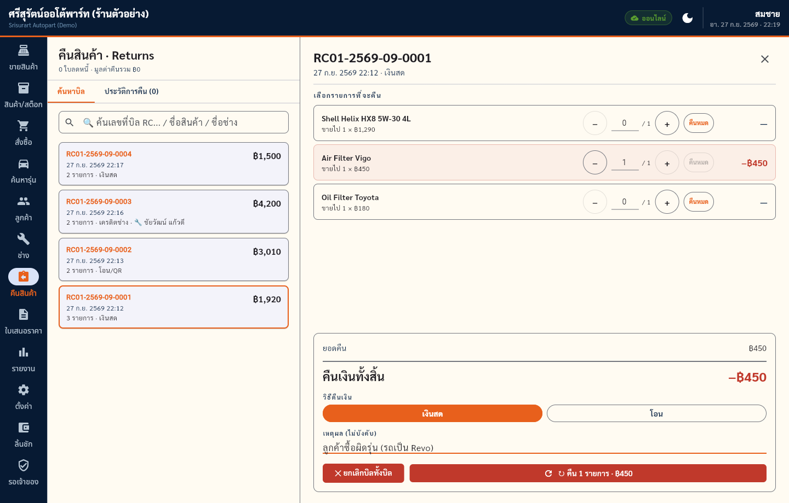
หน้า คืนสินค้า · Returns
- เมนู คืนสินค้า → แท็บ ค้นหาบิลค้นด้วยเลข RC ชื่อสินค้า หรือชื่อช่าง · บิลที่มี ✕ ยกเลิกแล้ว เลือกไม่ได้
- แตะบิล แล้วเลือกจำนวนที่คืนแต่ละรายการปุ่ม +/− จำกัดไว้ไม่ให้เกินที่คืนได้ · คืนหมด = คืนเต็มจำนวนที่เหลือ
- เลือกวิธีคืนเงินเงินสด · โอน · หักจากเครดิต (เฉพาะบิลที่มีช่าง — บิลเครดิตตั้งค่าเริ่มต้นเป็นแบบนี้)
- ใส่เหตุผล (ไม่บังคับ)เช่น เช่น ลูกค้าเปลี่ยนใจ, สินค้าชำรุด, ขายผิดรุ่น
- กดยืนยันยืนยันการคืนสินค้า {n} รายการ มูลค่า {baht}? → ตกลง → ใบลดหนี้ (เลข
CN) พร้อมปุ่ม พิมพ์ใบลดหนี้ และรายการขึ้นในแท็บ ประวัติการคืน ({n})
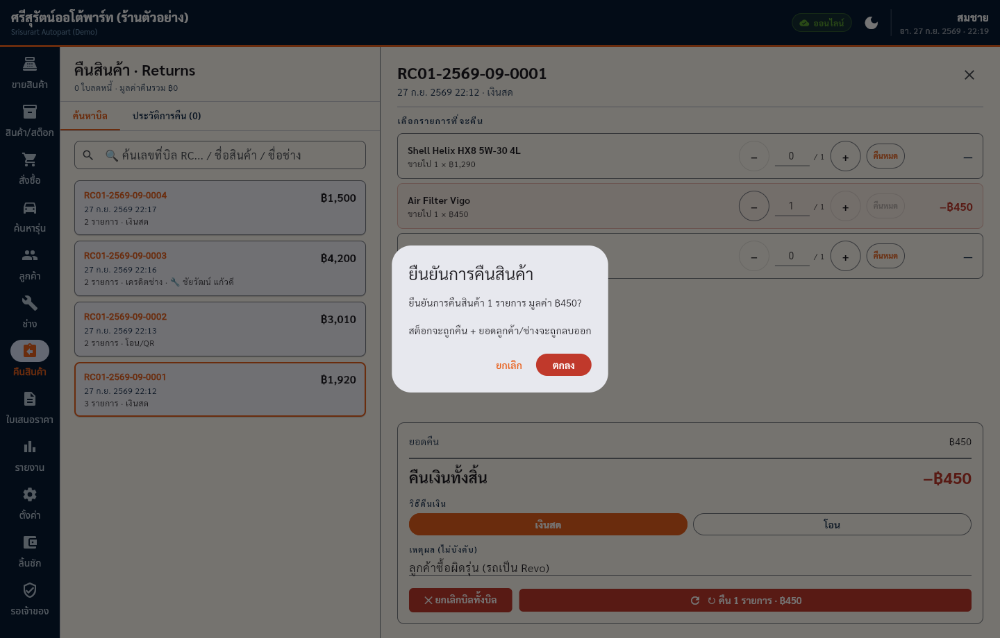
กล่อง ยืนยันการคืนสินค้า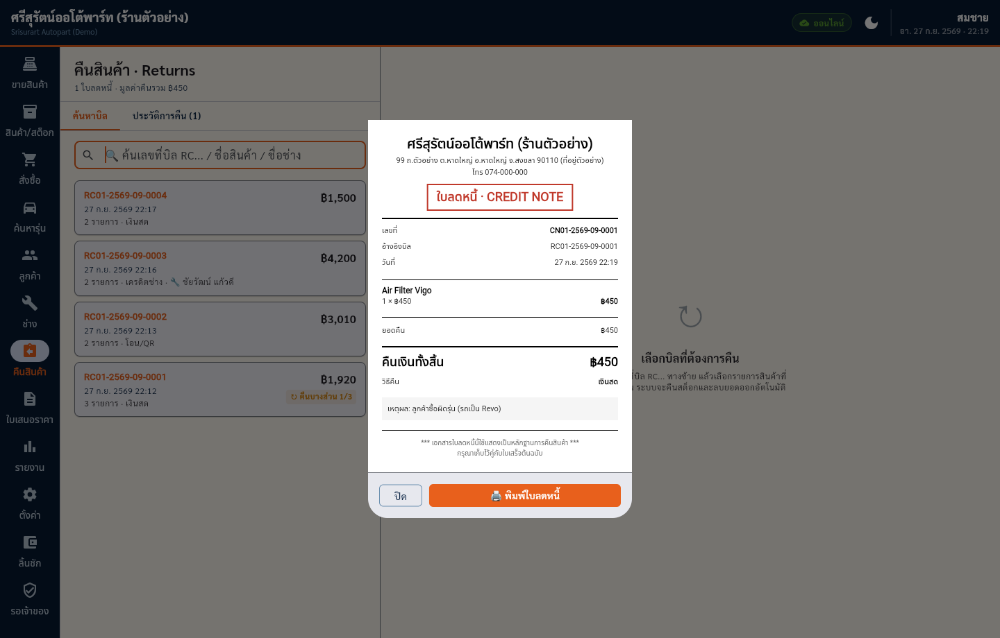
ใบลดหนี้ · CREDIT NOTE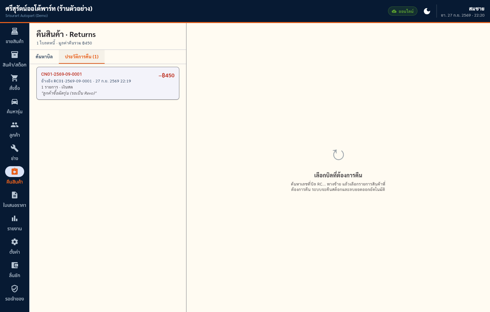
แท็บ ประวัติการคืน — เลข CN อ้างอิงบิล RC และเหตุผล
บิลเครดิต แต่คืนเป็นเงินสดระบบเตือน คืนเป็นเงินสด? เพราะ การคืนเป็นเงินสดจะไม่ลดยอดเครดิตของช่าง — ปกติให้ใช้ หักจากเครดิต
ยกเลิกทั้งบิล Void
- ออนไลน์: กด ✕ ยกเลิกบิลทั้งบิล → ยกเลิกบิล {receiptNo} ทั้งบิล?
คืนสินค้าทุกรายการ + คืนเงินทั้งหมด (ไม่ต้องใช้ PIN) · บิลที่คืนครบแล้วขึ้น บิลนี้คืนหมดแล้ว
- ออฟไลน์: ยกเลิกได้เฉพาะบิลที่ ขายตอนออฟไลน์ — ปุ่มเปลี่ยนเป็น ✕ ยกเลิกบิลออฟไลน์ และ ต้องใส่เหตุผล (กรุณาระบุเหตุผลในการยกเลิกบิล) บิลที่ขายตอนออนไลน์ยกเลิกตอนออฟไลน์ไม่ได้ (กฎ บิลออนไลน์สามารถยกเลิกได้เมื่อเชื่อมต่ออินเทอร์เน็ตเท่านั้น) — รอเน็ตกลับ
คืนสินค้าตอนเน็ตหลุด (API build)คืนสินค้าได้ตามขั้นตอนเดิม — ระบบออกใบลดหนี้เลข CN ในเครื่อง เก็บเข้าคิวรอส่ง แล้วส่งขึ้นเซิร์ฟเวอร์เองเมื่อเน็ตกลับ (#452) · คืนเป็น เงินสด ตอนออฟไลน์ต้องมีกะเปิดอยู่ (ไม่เช่นนั้นขึ้น กรุณาเปิดกะก่อน) · เซิร์ฟเวอร์ตรวจซ้ำตอนรับ ถ้าไม่ผ่าน รายการจะไปอยู่หน้า รอเจ้าของ (ภาค 02 หัวข้อ 9)
Srisurart POS · ภาค 017 · ปิดกะ
Section 7
เงินเข้า-ออก · ปิดกะ Drawer entries & close shift
บันทึกเงินเข้า-ออกระหว่างวัน Cash in / out
- เมนู ลิ้นชัก → แท็บ 💵 รายการเงิน
- เลือก 💸 เงินออก หรือ 💰 เงินเข้า ใส่จำนวนและหมายเหตุเช่น หมายเหตุ เช่น จ่ายซัพ / เติมทอน / ค่าน้ำมัน
- กด + เพิ่มรายการใน ประวัติรายการวันนี้ และยอด "เงินในลิ้นชักที่ควรมี" เปลี่ยนตาม
เงินออกเกินเงินในลิ้นชักบันทึก 💸 เงินออก มากกว่าเงินที่มีในลิ้นชักไม่ได้ ระบบจะขึ้น เงินในลิ้นชักไม่พอ (มี ฿X) โดย ฿X คือเงินที่มีอยู่ตอนนี้ — ให้ลดจำนวนลง หรือบันทึก 💰 เงินเข้า ก่อนถ้าเติมเงินเข้าลิ้นชักจริง · เงินที่ควรมีในลิ้นชักนับ ตามกะ กะใหม่เริ่มนับจากเงินตั้งต้นของกะนั้น ไม่รวมเงินของกะก่อน · ถ้าบันทึกเงินออกตอนออฟไลน์แล้วพอส่งเข้าระบบ ยอดออกมากกว่าเงินในลิ้นชัก ระบบยังเก็บรายการไว้ และแจ้งเจ้าของร้านที่หน้า รอเจ้าของ (เงินออกจากลิ้นชักเกินยอดตอนออฟไลน์)
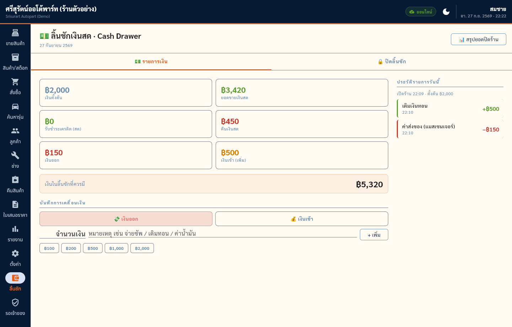
แท็บ 💵 รายการเงิน — การ์ดสรุป 6 ช่อง เงินในลิ้นชักที่ควรมี และประวัติรายการวันนี้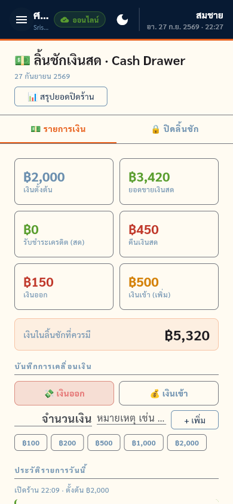
บนมือถือ — การ์ดเรียง 2 คอลัมน์ แท็บ ปิดลิ้นชัก อยู่ด้านบนขวาปิดกะ Close shift
- ตรวจว่าไม่มีรายการค้างส่งป้ายมุมบนต้องเป็น ออนไลน์ ไม่มีตัวเลขค้าง (ดูหัวข้อ 8)
- แท็บ 🔒 ปิดลิ้นชัก — อ่าน "สรุปยอดเงินสด"เงินที่ควรมีในลิ้นชัก = ตั้งต้น + ขายเงินสด + รับชำระเครดิต (เงินสด) − คืนเงินสด + เงินเพิ่ม − เงินออก
- นับเงินจริง กรอก นับเงินสดจริงได้ ฿ผลต่าง: ✓ ตรงยอด / เงินเกิน +{baht} / เงินขาด −{baht}
- กด 🔒 ยืนยันปิดลิ้นชัก✓ ปิดลิ้นชักแล้วเวลา {hh:mm} · นับจริง {baht} — หลังจากนี้บันทึกเงินเข้า-ออกในกะนี้ไม่ได้แล้ว (ขายต่อ = เปิดกะใหม่ ด้านล่าง)
- (แนะนำ) พิมพ์สรุปยอดปุ่ม 📊 สรุปยอดปิดร้าน → 🖨 พิมพ์รายงานปิดร้าน
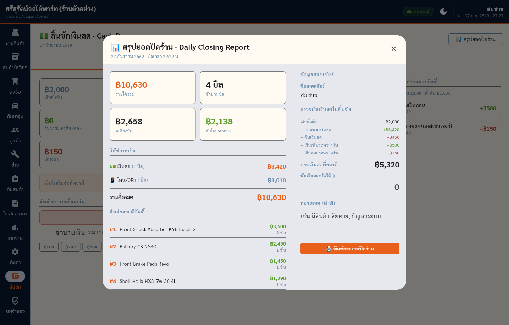
สรุปยอดปิดร้าน · Daily Closing Report — ภาพถ่ายก่อนแก้ #461: เวอร์ชันปัจจุบันมีแถว 🔧 เครดิตช่าง เพิ่มใต้ โอน/QR
อ่านสรุปยอดปิดร้านส่วน วิธีชำระเงิน มี 3 แถว 💵 เงินสด · 📱 โอน/QR · 🔧 เครดิตช่าง ซึ่งบวกกันเท่า รวมทั้งหมด (#461) — ยอดขาย วิธีชำระ และสินค้าขายดีเป็นของ ทั้งวัน ส่วน "ตรวจนับเงินสดในลิ้นชัก" นับเฉพาะเงินสดของ กะที่เปิดอยู่ (นับตามกะ ไม่ใช่ตามวัน — แต่ละกะนับเฉพาะเงินที่เกิดในกะนั้น ตั้งแต่เปิดกะ) ตรงกับแท็บ 🔒 ปิดลิ้นชัก
ทำไมปุ่มปิดลิ้นชักกดไม่ได้ปุ่มจะกดได้เมื่อ ครบ 3 ข้อ: กรอกยอดนับจริงแล้ว · ไม่อยู่ในโหมดออฟไลน์ · ไม่มีรายการค้างส่ง (PR #456) ถ้ายังค้างอยู่ ระบบจะบอก ยังมี {N} รายการติดปัญหา / ค้างส่ง — ต้องส่งเข้าระบบให้หมดก่อนปิดกะ — รอให้ส่งหมด หรือให้เจ้าของร้านจัดการรายการที่ถูกปฏิเสธในหน้า รอเจ้าของ
เปิดกะถัดไปในวันเดียวกัน Next shift, same day
ระบบรองรับหลายกะต่อวัน (08 §11 · #452) — เช่น เปลี่ยนคนเฝ้าเคาน์เตอร์ตอนบ่าย
- ปิดกะปัจจุบันให้เรียบร้อยตามขั้นตอนด้านบน
- ที่หน้า ลิ้นชัก ทั้งสองแท็บจะมีการ์ด เปิดกะใหม่การ์ดบอก กรอกเงินตั้งต้นในลิ้นชักก่อนเริ่มขาย พร้อมช่องเงินตั้งต้นและปุ่มลัด
- นับเงินที่ส่งต่อในลิ้นชัก กรอก เงินตั้งต้น ฿ (หรือปุ่มลัด) → กด เปิดกะใหม่กลับไปแท็บ 💵 รายการเงิน ของกะใหม่ — ยอดเงินสดที่ควรมีนับเฉพาะเงินของกะใหม่นี้ (เริ่มจากเงินตั้งต้นที่กรอก)
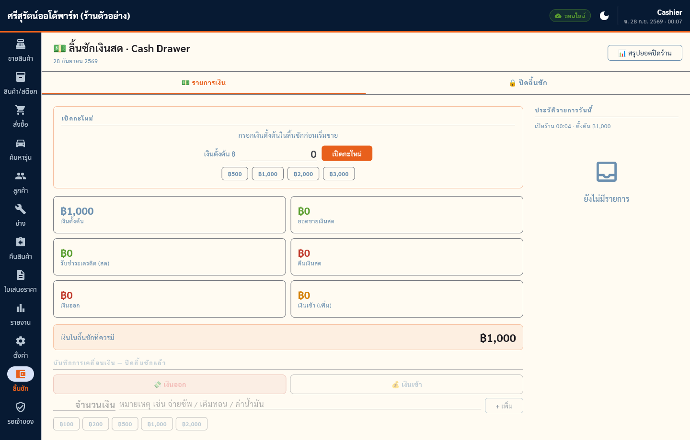
การ์ด เปิดกะใหม่ — ถ่ายหลังปิดกะตัวอย่างของร้าน demo (ตั้งต้นและนับจริง ฿1,000) ฟอร์มบันทึกเงินด้านล่างเป็นสีจางเพราะกะนี้ปิดแล้ว
ข้อความ เปิดกะใหม่ ยังเป็นร่างที่ทีมเขียน (02_API_SCREENS §8.1.1)
Srisurart POS · ภาค 018 · ออฟไลน์
Section 8
เมื่อเน็ตหลุด · สถานะซิงก์ Offline & sync (API build)
เครื่อง POS ขายต่อได้ตอนเน็ตหลุด ระบบเก็บรายการไว้ในเครื่อง (คิวรอส่ง / outbox) แล้วส่งขึ้นเซิร์ฟเวอร์เองเมื่อเน็ตกลับ
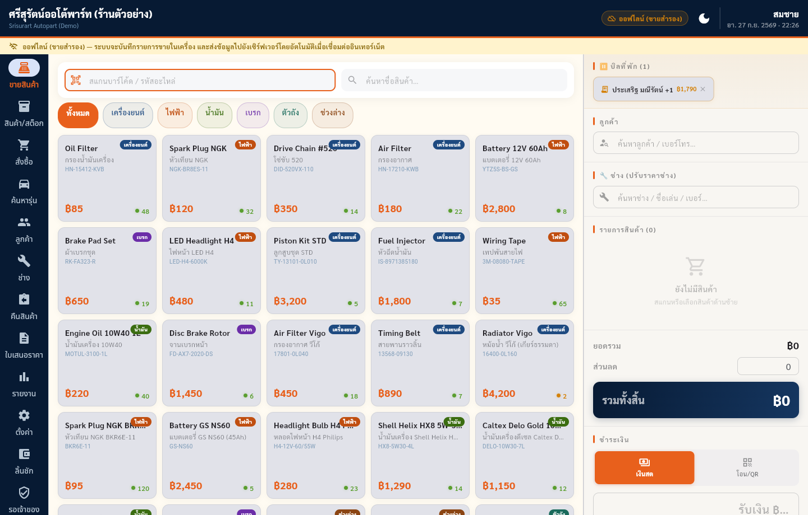
ออฟไลน์ — ป้าย ออฟไลน์ (ขายสำรอง) และแถบเหลืองใต้แถบบน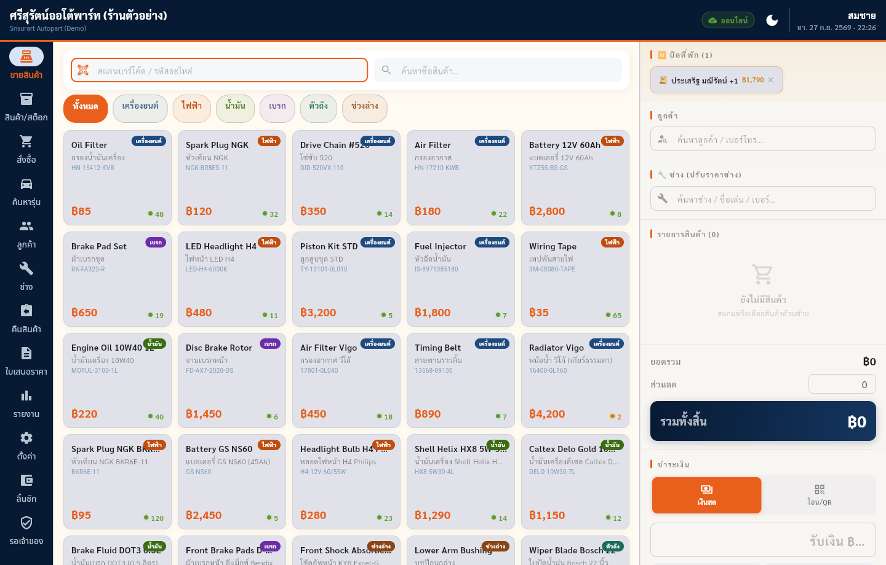
ออนไลน์ — ป้าย ออนไลน์ สีเขียวอ่านป้ายสถานะมุมบน Status pill
| ป้าย | ความหมาย |
|---|
| ออนไลน์ (เขียว) | ปกติ ทุกอย่างส่งถึงเซิร์ฟเวอร์ทันที |
| ออฟไลน์ (ขายสำรอง) หรือ ออฟไลน์ (ขายสำรอง) · ค้าง {N} (เหลือง) | เน็ตหลุดหรือเซิร์ฟเวอร์ตอบช้า — ขายต่อได้ รายการเก็บในเครื่อง |
| กำลังส่งข้อมูล... / กำลังส่งข้อมูล... ({N}) (ฟ้า หมุน) | เน็ตกลับแล้ว กำลังส่งรายการที่ค้าง |
| รอตรวจสอบ ({N}) (แดง) | มีรายการที่เซิร์ฟเวอร์ปฏิเสธหรือค้าง — กดเพื่อไปหน้า รอเจ้าของ (งานของเจ้าของร้าน) |
ระหว่างออฟไลน์จะมีแถบเหลือง ออฟไลน์ (ขายสำรอง) — ระบบจะบันทึกรายการขายในเครื่อง และส่งข้อมูลไปยังเซิร์ฟเวอร์โดยอัตโนมัติเมื่อเชื่อมต่ออินเทอร์เน็ต
ออฟไลน์ทำอะไรได้บ้าง What works offline
ทำได้ (เข้าคิวรอส่ง)
- ขายสินค้า · คืนสินค้า (ออกใบลดหนี้ CN ในเครื่อง)
- เปิดกะ · เงินเข้า-ออกลิ้นชัก
- รับชำระเครดิตช่าง
- เพิ่ม/แก้ลูกค้า
- ยกเลิกบิลที่ขายตอนออฟไลน์
- พักบิล (เก็บในเครื่องอยู่แล้ว)
ต้องออนไลน์
- ปิดกะ
- ยกเลิกบิลที่ขายตอนออนไลน์
- ใบเสนอราคาทุกงาน
- สินค้า หมวด ซัพพลายเออร์ ใบสั่งซื้อ ช่าง (เพิ่ม/แก้)
- ตั้งค่า ลบข้อมูลทุกชนิด ตั้ง PIN จัดการเครื่อง สำรอง/นำเข้า
ปุ่มที่ต้องออนไลน์จะกดไม่ได้ หรือขึ้นข้อความขึ้นต้นด้วย ระบบอยู่ในสถานะออฟไลน์ ไม่สามารถ…
ห้ามทำตอนมีรายการค้างอย่าล้างข้อมูลเบราว์เซอร์ อย่าปิดแท็บแล้วเปิดเครื่องอื่นมาขายแทน — รายการที่ยังไม่ได้ส่งอยู่ในเครื่องนี้เครื่องเดียว · ข้อยกเว้นเดียว: เครื่องที่ใช้งานมาก่อน 2026-10-06 ต้องล้างครั้งเดียว (รหัสเก่าส่งขึ้นเซิร์ฟเวอร์ไม่ได้ — ดูภาค 04)
Srisurart POS · ภาค 019 · ข้อความผิดพลาด
Section 9
ข้อความผิดพลาดที่พบบ่อย Common messages
ข้อจำกัดปัจจุบัน Current limitations
- ร้านจริงยังใช้ Drift build — หัวข้อ 1, 8 และข้อความที่เกี่ยวกับกะ/เครื่อง/ซิงก์ ใช้กับ API build เท่านั้น
- ข้อความ ยังมี {N} รายการติดปัญหา / ค้างส่ง… ยังเป็นร่างที่ทีมเขียน ยังไม่ผ่านการรับรองจากเจ้าของโปรเจกต์ — อาจเปลี่ยนถ้อยคำ
- สแกนบาร์โค้ดใช้เครื่องยิงแบบคีย์บอร์ดหรือพิมพ์เอง · พิมพ์ผ่านหน้าต่างพิมพ์ของเครื่อง ไม่มีการสั่งเครื่องพิมพ์หรือเด้งลิ้นชักโดยตรง